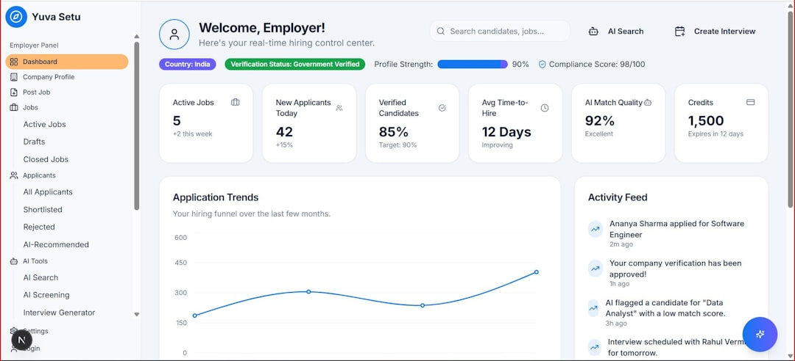
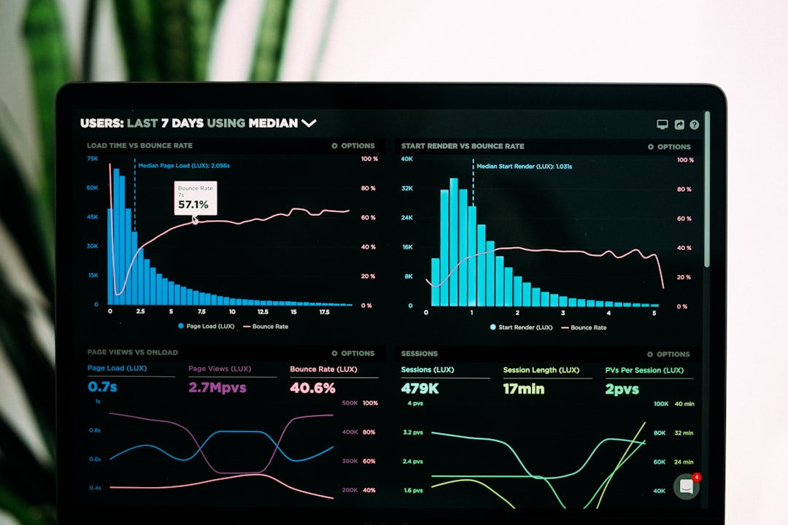

IoCare+ AI 루틴 2.0 — 생활 패턴을 학습해 스마트홈을 선제적으로 제안
IoT 기획팀이 사용자 생활 패턴 인식 알고리즘과 디바이스 피드백 루프를 결합해 IoCare+ 루틴 추천 엔진을 고도화했다. 정수기·공기청정기 등 코웨이 제품군의 루틴 설정 성공률을 85%까지 끌어올렸으며, AI가 사용자 행동 맥락을 분석해 루틴을 스스로 제안하는 방식으로 설정 허들을 낮췄다.
IoT 기획팀이 사용자 생활 패턴 인식 알고리즘과 디바이스 피드백 루프를 결합해 IoCare+ 루틴 추천 엔진을 고도화했다. 정수기·공기청정기 등 코웨이 제품군의 루틴 설정 성공률을 85%까지 끌어올렸으며, AI가 사용자 행동 맥락을 분석해 루틴을 스스로 제안하는 방식으로 설정 허들을 낮췄다.

IoT 기획팀이 사람과 AI 모두가 이해할 수 있는 기획서 표준안을 정립하고, 사양 질의에 자동 응답하는 RAG 기반 챗봇을 구축했다. 기획서 내 사양 확인 커뮤니케이션 비용을 60% 줄였으며, 문서를 구조화된 데이터로 변환해 AI가 직접 쿼리할 수 있는 파이프라인을 완성했다.
IoT 기획팀장이 NotebookLM MCP CLI와 에이전트 스킬을 결합해 자료 취합·핵심 질문 실행·음성 개요·멀티 스타일 슬라이드를 원클릭으로 생성하는 자동화 파이프라인을 구축했다. 연구·보고서 작성 공수의 90%를 자동화해 기존 2시간 작업을 10분으로 단축했다.

AI 전략팀이 Gmail 수신 WQA 인증 메일을 AI가 자동 분류해 인증 진행 현황을 한눈에 보여주는 실시간 대시보드를 개발했다. 수동 이메일 확인 대비 현황 파악 속도를 10배 높이고 누락을 제로화했으며, Cloudflare Workers 기반으로 무료 운영 중이다.
IoT 서비스개발팀이 macOS 전역 단축키로 선택한 코드를 즉시 AI 해설 팝업으로 보여주는 오픈소스 앱 Codepop을 개발했다. Rust·Tauri 기반으로 브라우저·VS Code·Slack 어디서나 동작하며, Gemini 2.5 무료 티어를 써서 운영비 $0을 달성했다. 기획부터 배포까지 전 과정을 Claude Code와의 대화만으로 완성했다.
IoT 앱개발팀이 Figma 플러그인 안에서 Claude API를 직접 호출해 한국어 텍스트 레이어를 9개 언어로 일괄 번역하고 UI 오버플로까지 자동 감지하는 파이프라인을 구현했다. 외부 번역 툴 전환 없이 Figma 내에서 번역~검증~배포를 완결하며 작업 사이클을 80% 단축했다.